정보처리기사(구) (2019-03-03 기출문제)
1과목: 데이터 베이스
1. SQL에서 VIEW를 삭제할 때 사용하는 명령은?
- ERASE
- KILL
- DROP
- DELETE
(정답률: 79%)

2. 다음 릴레이션의 Degree와 Cardinality는?
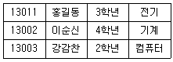
- Degree : 4, Cardinality : 3
- Degree : 3, Cardinality : 4
- Degree : 3, Cardinality : 12
- Degree : 12, Cardinality : 3
(정답률: 71%)
3. 모든 응용프로그램이나 사용자들이 필요로 하는 데이터를 통합한 조직 전체의 데이터베이스 구조를 논리적으로 정의하는 스키마는?
- 개념스키마
- 외부스키마
- 내부스키마
- 처리스키마
(정답률: 73%)
4. 병행제어의 목적으로 옳지 않은 것은?
- 시스템 활용도 최대화
- 사용자에 대한 응답시간 최소화
- 데이터베이스 공유 최소화
- 데이터베이스 일관성 유지
(정답률: 84%)
5. 한 릴레이션의 기본 키를 구성하는 어떠한 속성 값도 널(Null) 값이나 중복 값을 가질 수 없음을 의미하는 것은?
- 개체 무결성 제약 조건
- 참조 무결성 제약 조건
- 도메인 무결정 제약 조건
- 키 무결성 제약 조건
(정답률: 78%)
6. 학적 테이블에서 전화번호가 Null값이 아닌 학생명을 모두 검색할 때, SQL 구분으로 옳은 것은?
- SELECT 학생명 FROM 학적 WHERE 전화번호 DON'T NULL;
- SELECT 학생명 FROM 학적 WHERE 전화번호 != NULL;
- SELECT 학생명 FROM 학적 WHERE 전화번호 IS NOT NULL;
- SELECT 학생명 FROM 학적 WHERE 전화번호 IS 0;
(정답률: 83%)
7. 제2정규형에서 제3정규형이 되기 위한 조건은?
- 이행적 함수 종속 제거
- 부분적 함수 종속 제거
- 다치 종속 제거
- 결정자이면서 후보 키가 아닌 것 제거
(정답률: 74%)
8. 뷰에 대한 설명으로 옳지 않은 것은?
- 뷰는 삽입, 삭제, 갱신 연산에 제약사항이 따른다.
- 뷰는 데이터 접근 제어로 보안을 제공한다.
- 뷰는 물리적으로 구현되는 테이블이다.
- 뷰는 데이터의 논리적 독립성을 제공한다.
(정답률: 79%)
9. 시스템 카탈로그에 대한 설명으로 틀린 것은?
- 시스템 카탈로그는 DBMS가 생성하고 유지하는 데이터베이스 내의 특별한 테이블들의 집합체이다.
- 일반 사용자도 시스템 카탈로그의 내용을 검색할 수 있다.
- 시스템 카탈로그 내의 각 테이블은 DBMS에서 지원하는 개체들에 관한 정보를 포함한다.
- 시스템 카탈로그에 대한 갱신은 데이터베이스의 무결성 유지를 위하여 사용자가 직접 갱신해야 한다.
(정답률: 81%)
10. 다음 트리를 후위 순회(Postorder Traversal)한 결과는?
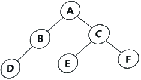
- A B D C E F
- D B A E C F
- A B C D E F
- D B E F C A
(정답률: 73%)
11. 데이터베이스 설계 단계 중 응답시간, 저장공간의 효율화, 트랜잭션 처리도와 가장 밀접한 관계가 있는 것은?
- 물리적 설계
- 논리적 설계
- 개념적 설계
- 요구조건 분석
(정답률: 66%)
12. Which of the following does not belong to the DDL statement of SQL?
- CREATE
- DELETE
- DROP
- ALTER
(정답률: 80%)
13. 스택에서 A, B, C, D로 순서가 정해진 입력 자료를 Push→Push→Pop→Push→Pop→Push→Pop→Pop으로 연산 했을 때 출력은?
- C, B, D, A
- B, C, D, A
- B, C, A, D
- C, B, A, D
(정답률: 78%)
14. 해싱함수 중 주어진 키를 여러 부분으로 나누고, 각 부분의 값을 더하거나 배타적 논리합(XOR : Exclusive OR) 연산을 통하여 나온 결과로 주소를 취하는 방법은?
- 중간 제곱 방법(Mid-square method)
- 제산 방법(Division method)
- 폴딩 방법(Folding method)
- 기수 변환법(Radix conversion method)
(정답률: 62%)
15. 관계 데이터베이스에 있어서 관계 대수 연산이 아닌 것은?
- 디비전(division)
- 프로젝트(project)
- 조인(join)
- 포크(fork)
(정답률: 75%)
16. 다음 자료를 버블 정렬을 이용하여 오름차순으로 정렬할 경우 PASS 1의 결과는?
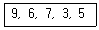
- 6, 9, 7, 3, 5
- 3, 9, 6, 7, 5
- 3, 6, 7, 9, 5
- 6, 7, 3, 5, 9
(정답률: 67%)
17. 비선형 자료 구조에 해당하는 것은?
- 큐(Queue)
- 그래프(Graph)
- 데크(Deque)
- 스택(Stack)
(정답률: 77%)
18. 해싱에서 동일한 홈 주소로 인하여 충돌이 일어난 레코드들의 집합을 의미하는 것은?
- Overflow
- Bucket
- Synonym
- Collision
(정답률: 65%)
19. 일련의 연산 집합으로 데이터베이스의 상태를 변환시키기 위하여 논리적 기능을 수행하는 하나의 작업 단위는?
- 도메인
- 트랜잭션
- 모듈
- 프로시저
(정답률: 81%)
20. 다음 내용이 설명하고 있는 기술은?
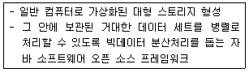
- Hadoop
- SQLite
- XSQL
- HMID
(정답률: 67%)
2과목: 전자 계산기 구조
21. PE(processing element)라는 연산기를 사용하여 동기적 병렬 처리를 수행하는 것은?
- Pipeline processor
- Vector processor
- Multi processor
- VLSI processor
(정답률: 36%)
22. 반가산기에서 입력을 X, Y라 할 때 출력 부분의 캐리(carry) 값은?
- XY
- X
- Y
- X+Y
(정답률: 46%)
23. 명령어가 오퍼레이션 코드(OP code) 6비트, 어드레스 필드 16비트로 되어 있다. 이 명령어를 쓰는 컴퓨터의 최대 메모리 용량은?
- 16K word
- 32K word
- 64K word
- 1M word
(정답률: 42%)
24. 디코더(decoder)의 출력이 4개일 때 입력개수는?
- 1
- 2
- 8
- 16
(정답률: 42%)
25. 기억장치에 기억된 정보를 액세스하기 위하여 주소를 사용하는 것이 아니라 기억된 정보의 일부분을 이용하여 원하는 정보를 찾는 것은?
- Random Access Memory
- Associative
- Read Only Memory
- Virtual Memory
(정답률: 47%)
26. 다음 진리표에 해당하는 논리식은?
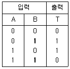
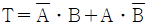
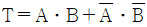
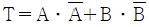
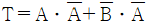
(정답률: 53%)
27. Flynn의 컴퓨터 시스템 분류 제안 중에서 하나의 데이터 흐름이 다수의 프로세서들로 전달되며, 각 프로세서는 서로 다른 명령어를 실행하는 구조는?
- 단일 명령어, 단일 데이터 흐름
- 단일 명령어, 다중 데이터 흐름
- 다중 명령어, 단일 데이터 흐름
- 다중 명령어, 다중 데이터 흐름
(정답률: 47%)
28. 다음 중 타이머에 의한 인터럽트(Interrupt)는?
- 프로그램 인터럽트
- I/O 인터럽트
- 외부 인터럽트
- 머신 체크 인터럽트
(정답률: 37%)
29. DMA 제어기에서 CPU와 I/O 장치 사이의 통신을 위해 반드시 필요한 것이 아닌 것은?
- address register
- word count register
- address line
- device register
(정답률: 33%)
30. I/O operation과 관계가 없는 것은?
- channel
- handshaking
- interrupt
- emulation
(정답률: 42%)
31. 블루레이 디스크(Blue-ray Disc)에 관한 설명으로 틀린 것은?
- 저장된 데이터를 읽기 위해 적색 레이저(650nm)를 사용한다.
- 비디오 포맷은 DVD와 동일한 MPEG-2 기반 코덱이 사용된다.
- 단층 기록면을 가지는 12cm 직경에 25GB정도의 데이터를 저장할 수 있다.
- BD-ROM(읽기 전용), BD-R(기록가능), BD-RE(재기록가능)가 있다.
(정답률: 51%)
32. 기억장치를 각 모듈이 번갈아 가며 접근하는 방법은?
- 페이징
- 스테이징
- 인터리빙
- 세그멘팅
(정답률: 48%)
33. 베이스레지스터 주소지정방식의 특징이 아닌 것은?
- 베이스레지스터가 필요하다.
- 프로그램의 재배치가 용이하다.
- 다중 프로그래밍 기법에 많이 사용된다.
- 명령어의 길이가 절대주소지정방식보다 길어야 한다.
(정답률: 49%)
34. CPU 내부의 레지스터 중 프로그램 제어와 관계가 있는 것은?
- memory address register
- index register
- accumulator
- status register
(정답률: 48%)
35. 기억장치의 구조가 stack 구조를 가질 때 가장 밀접한 관계가 있는 명령어는?
- one-address
- two-address
- three-address
- zero-address
(정답률: 46%)
36. 시프트 레지스터(shift register)의 내용을 오른쪽으로 한 번 시프트하면 데이터는 어떻게 변하는가?
- 기존 데이터의 1/2
- 기존 데이터의 1/3
- 기존 데이터의 1/4
- 기존 데이터의 1/10
(정답률: 55%)
37. 가상기억장치에서 주소 공간이 1024K, 기억공간은 32K라고 가정할 때 주기억장치의 주소 레지스터는 몇 비트로 구성되는가?
- 12
- 13
- 14
- 15
(정답률: 51%)
38. 채널(Channel)에 대한 설명으로 가장 옳지 않은 것은?
- DMA와 달리 여러 개의 블록을 입출력할 수 있다.
- 시스템의 입출력 처리 능력을 향상시키는 기능을 한다.
- 멀티플렉서 채널은 저속인 여러 장치를 동시에 제어하는 데 적합하다.
- 입출력 동작을 수행하는데 있어서 CPU의 지속적인 개입이 필요하다.
(정답률: 49%)
39. 사이클 타임이 750ns 인 기억장치에서는 이론적으로 초당 몇 개의 데이터를 불러 낼 수 있는가?
- 약 750개
- 약 1330개
- 약 1.3×106개
- 약 750×106개
(정답률: 38%)
40. 메모리 버퍼 레지스터(MBR)의 설명으로 옳은 것은?
- 다음에 실행할 명령어의 번지를 기억하는 레지스터
- 현재 실행 중인 명령의 내용을 기억하는 레지스터
- 기억장치를 출입하는 데이터가 일시적으로 저장되는 레지스터
- 기억장치를 출입하는 데이터의 번지를 기억하는 레지스터
(정답률: 42%)
3과목: 운영체제
41. 4개의 페이지를 수용할 수 있는 주기억장치가 있으며, 초기에는 모두 비어 있다고 가정한다. 다음의 순서로 페이지 참조가 발생할 때, FIFO 페이지 교체 알고리즘을 사용할 경우 페이지 결함의 발생 횟수는?
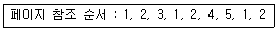
- 6회
- 7회
- 8회
- 9회
(정답률: 64%)
42. 데이터 발생 즉시, 또는 데이터 처리 요구가 있는 즉시 처리하여 결과를 산출하는 방식으로 정해진 시간 내에 결과를 도출하는 시스템은?
- 분산 처리 시스템
- 실시간 처리 시스템
- 배치 처리 시스템
- 시분할 처리 시스템
(정답률: 78%)
43. 운영체제에서 스레드(Thread)의 개념으로 가장 옳지 않은 것은?
- 다중 프로그래밍 시스템에서 CPU를 받아서 수행되는 프로그램 단위이다.
- 프로세스(Process)나 태스크(Task)보다 더 작은 단위이다.
- 입ㆍ출력장치와 같은 자원의 할당에 관계된다.
- 한 태스크(Task)는 여러 개의 스레드(Thread)로 나누어 수행될 수 있다.
(정답률: 44%)
44. 파일 디스크립터(File Descriptor)에 관한 설명으로 옳지 않은 것은?
- 사용자가 직접 참조할 수 있다.
- 파일마다 독립적으로 존재하며, 시스템에 따라 다른 구조를 가질 수 있다.
- 대개 보조기억장치에 저장되어 있다가 해당 파일이 열릴(Open) 때 주기억장치로 이동한다.
- 파일을 관리하기 위해 시스템(운영체제)이 필요로 하는 파일에 대한 정보를 갖고 있는 제어블록(FCB)이다.
(정답률: 57%)
45. Cryptography와 가장 관계 없는 것은?
- RISC
- DES Algorithm
- Public key system
- RSA Algorithm
(정답률: 61%)
46. 프로세스가 실행되면서 하나의 페이지를 일정시간 동안 집중적으로 액세스하는 현상은?
- 구역성(locality)
- 스래싱(thrashing)
- 워킹세트(Working set)
- 프리페이징(prepaging)
(정답률: 53%)
47. SJF(Shortest Job First) 스케줄링에서 다음과 같은 작업들이 준비상태 큐에 있을 때 평균 반환시간과 평균 대기시간은?
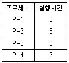
- 평균 반환시간 : 13, 평균 대기시간 : 7
- 평균 반환시간 : 13, 평균 대기시간 : 9
- 평균 반환시간 : 15, 평균 대기시간 : 7
- 평균 반환시간 : 15, 평균 대기시간 : 9
(정답률: 50%)
48. UNIX에서 파일 사용 권한 지정에 관한 명령어는?
- mv
- ls
- chmod
- fork
(정답률: 72%)
49. 운영체제의 프로세스(Process)에 대한 설명으로 옳지 않은 것은?
- 트랩 오류, 프로그램 요구, 입ㆍ출력 인터럽트에 대해 조치를 취한다.
- 비동기적 행위를 일으키는 주체로 정의할 수 있다.
- 실행중인 프로그램을 말한다.
- 프로세스는 각종 자원을 요구한다.
(정답률: 47%)
50. 공유자원을 어느 시점에서 단지 한 개의 프로세스만이 사용할 수 있도록 하며, 다른 프로세스가 공유자원에 대하여 접근하지 못하게 제어하는 기법은?
- mutual exclusion
- critical section
- deadlock
- scatter loading
(정답률: 52%)
51. 운영체제의 역할로 가장 옳지 않은 것은?
- 사용자 인터페이스 제공
- 입ㆍ출력에 대한 보조역할 수행
- 사용자들 간 하드웨어 자원의 공동 사용
- 원시프로그램을 목적프로그램으로 변환
(정답률: 68%)
52. HRN 스케쥴링 방식에서 입력된 작업이 다음과 같을 때 우선순위가 가장 높은 것은?
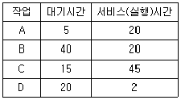
- A
- B
- C
- D
(정답률: 67%)
53. 150K의 작업요구시 first fit과 best fit 전략을 각각 적용할 경우, 할당 영역의 연결이 옳은 것은?
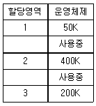
- first fit : 2, best fit : 3
- first fit : 3, best fit : 2
- first fit : 1, best fit : 2
- first fit : 3, best fit : 1
(정답률: 72%)
54. 다음 중 교착상태가 발생할 수 있는 필요충분조건은?
- 중단 조건(Preemption)
- 환형 대기(Circular Wait)
- 기아 상태(Starvation)
- 동기화(Synchronization)
(정답률: 64%)
55. 기억장치의 고정 분할 할당에서 총 24K의 공간이 그림과 같이 8K, 8K, 4K, 4K로 나누어져 있고, 작업 큐에는 5K, 5K, 10K, 10K의 작업이 순차적으로 대기 중이라고 할 때 발생하는 전체 기억공간의 낭비를 계산하면?
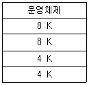
- 6K
- 14K
- 18K
- 20K
(정답률: 50%)
56. 분산 처리 시스템에 대한 설명으로 옳지 않은 것은?
- 연산속도, 신뢰성, 사용 가능도가 향상된다.
- 시스템의 점진적 확장이 용이하다.
- 중앙 집중형 시스템에 비해 시스템 설계가 간단하고 소프트웨어 개발이 쉽다.
- 단일 시스템에 비해 처리 능력과 저장용량이 높고 신뢰성이 향상된다.
(정답률: 72%)
57. Microsoft의 Windows 운영체제의 특징이 아닌 것은?
- GUI기반 운영체제이다.
- 트리 디렉터리 구조를 가진다.
- 선점형 멀티태스킹 방식을 사용한다.
- 소스가 공개된 개방형(Open)시스템이다.
(정답률: 59%)
58. 분산운영체제에 대한 설명을 모두 옳게 나열한 것은?
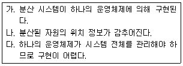
- 가
- 가, 나
- 가, 다
- 가, 나, 다
(정답률: 49%)
59. 전송크기가 1KB(kilo byte)일 때, 이동헤드디스크의 데이터 액세스 시간과 고정헤드의 데이터 액세스 시간(ms)을 구한 결과는?
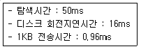
- 이동헤드 : 66.96, 고정헤드 : 16.96
- 이동헤드 : 16.96, 고정헤드 : 66.96
- 이동헤드 : 50.96, 고정헤드 : 16.96
- 이동헤드 : 16.96, 고정헤드 : 50.96
(정답률: 43%)
60. 완전연결(Fully Connection)형 분산처리 시스템에 관한 설명으로 옳지 않은 것은?
- 각 사이트들이 시스템 내의 다른 모든 사이트들과 직접 연결된 구조이다.
- 하나의 링크가 고장 나더라도 다른 링크를 이용할 수 있다.
- 사이트 수가 n개이면 링크 연결 수는 n-1개이다.
- 기본비용은 많이 들지만 통신비용은 적게 들고, 신뢰성이 높다.
(정답률: 54%)
4과목: 소프트웨어 공학
61. 소프트웨어 프로젝트 관리의 주요 구성 요소인 3P에 해당하지 않는 것은?
- People
- Problem
- Process
- Power
(정답률: 77%)
62. 소프트웨어 재공학의 주요 활동 중 역공학에 해당하는 것은?
- 소프트웨어 동작 이해 및 재공학 대상 선정
- 소프트웨어 기능 변경 없이 소프트웨어 형태를 목적에 맞게 수정
- 원시코드로부터 설계정보 추출 및 절차 설계표현, 프로그램과 데이터 구조 정보 추출
- 기존 소프트웨어 시스템을 새로운 기술 또는 하드웨어 환경이 이식
(정답률: 57%)
63. 소프트웨어 프로젝트 측정에서 신뢰할만한 비용과 노력 측정을 달성하기 위한 선택사항이 아닌 것은?
- 프로젝트 비용과 노력측정을 위해 상대적으로 복잡한 분해기술을 이용한다.
- 프로젝트의 정확한 측정을 위해 충분한 시간을 갖고 측정한다.
- 하나 이상의 자동화 측정도구들을 이용한다.
- 소프트웨어 비용과 노력에 대한 실험적 모델을 형성한다.
(정답률: 74%)
64. 소프트웨어 위기를 가져온 원인으로 가장 옳지 않은 것은?
- 소프트웨어 규모 증대와 복잡도에 따른 개발 비용 증가
- 프로젝트 관리기술의 부재
- 소프트웨어 개발기술에 대한 훈련 부족
- 소프트웨어 수요의 감소
(정답률: 69%)
65. 객체 지향 개념 중 하나 이상의 유사한 객체들을 묶어 공통된 특성을 표현한 데이터 추상화를 의미하는 것은?
- 메소드(method)
- 클래스(class)
- 상속성(inheritance)
- 메시지(message)
(정답률: 75%)
66. 객체들 간에 메시지를 주고받을 때 각 객체의 세부내용은 알 필요가 없으므로 인터페이스가 단순해지고 데이터와 데이터를 처리하는 함수를 하나로 묶는 것을 의미하는 것은?
- abstraction
- class
- encapsulation
- Inheritance
(정답률: 63%)
67. 소프트웨어 재공학은 어떤 유지보수 측면에서 소프트웨어 위기를 해결하기 위한 방법인가?
- Preventive maintenance
- Corrective maintenance
- Perfective maintenance
- Adaptive maintenance
(정답률: 58%)
68. 자료흐름도(DFD)의 작성 지침이라고 볼 수 없는 것은?
- 자료는 처리를 거쳐 변환될 때마다 새로운 명칭을 부여해야 한다.
- 자료흐름도의 최하위 처리(process)는 소단위명세서를 갖는다.
- 배경도(context diagram)에도 명칭과 번호를 부여해야 한다.
- 어떤 처리(process)가 출력자료를 산출하기 위해서는 필요한 자료가 반드시 입력되어야 한다.
(정답률: 46%)
69. 소프트웨어 생명주기 모형 중 Spiral Model에 대한 설명으로 가장 옳지 않은 것은?
- 대규모 시스템에 적합하다.
- 개발 순서는 계획 및 정의, 위험 분석, 공학적 개발, 고객 평가 순으로 진행된다.
- 소프트웨어를 개발하면서 발생할 수 있는 위험을 관리하고 최소화하는 것을 목적으로 한다.
- 개발 과정의 앞 단계가 완료되어야만 다음 단계로 넘어갈 수 있는 선형 순차적 모형이다.
(정답률: 65%)
70. 소프트웨어 공학에 대한 설명으로 가장 옳지 않은 것은?
- 소프트웨어의 개발, 운영, 유지보수, 그리고 폐기에 대한 체계적인 접근이다.
- 소프트웨어 제품을 체계적으로 생산하고 유지보수와 관련된 기술과 경영에 관한 학문이다.
- 과학적인 지식을 컴퓨터 프로그램 설계와 제작에 실제 응용하는 것이며, 이를 개발 및 운영하고 유지보수 하는데 필요한 문서화 작성 과정이다.
- 소프트웨어의 위기를 이미 해결한 학문으로 소프트웨어의 개발만을 위한 체계적인 접근이다.
(정답률: 76%)
71. 구조적 분석에서 자료 사전(Data Dictionary)작성 시 고려할 사항으로 옳지 않은 것은?
- 갱신하기 쉬워야 한다.
- 이름이 중복되어야 한다.
- 이름으로 정의를 쉽게 찾을 수 있어야 한다.
- 정의하는 방식이 명확해야 한다.
(정답률: 81%)
72. 외계인코드(Alien Code)를 가장 잘 설명한 것은?
- 프로그램의 로직이 복잡하여 이해하기 어려운 프로그램을 말한다.
- 오류가 없어 디버깅 과정이 필요 없는 프로그램을 의미한다.
- 사용자가 직접 작성한 프로그램을 의미한다.
- 아주 오래되거나 참고문서 또는 개발자가 없어 유지보수 작업이 어려운 프로그램을 의미한다.
(정답률: 77%)
73. 다음 중 독립적인 모듈이 되기 위해서 가장 좋은 결합도 상태는?
- control coupling
- stamp coupling
- common coupling
- content coupling
(정답률: 54%)
74. 소프트웨어를 재사용함으로써 얻을 수 있는 이점으로 가장 거리가 먼 것은?
- 새로운 개발 방법론 도입 용이
- 생산성 증가
- 소프트웨어 품질 향상
- 프로젝트 문서 공유
(정답률: 67%)
75. 소프트웨어 생명주기 모형에서 프로토타입 모형의 장점이 아닌 것은?
- 단기간 제작 목적으로 인하여 비효율적인 언어나 알고리즘을 사용할 수 있다.
- 개발과정에서 사용자의 요구를 충분히 반영한다.
- 최종결과물이 만들어지기 전에 의뢰자가 최종결과물의 일부 혹은 모형을 볼 수 있다.
- 의뢰자나 개발자 모두에게 공동의 참조 모델을 제공한다.
(정답률: 73%)
76. 럼바우의 객체 지향 분석에서 분석 활동의 모델링과 가장 관계없는 것은?
- 객체(object) 모델링
- 절차(procedure) 모델링
- 동적(dynamic) 모델링
- 기능(functional) 모델링
(정답률: 71%)
77. CASE가 제공하는 기능으로 거리가 먼 것은?
- 개발을 신속하게 할 수 있다.
- 개발 방법론을 생성할 수 있다.
- 오류 수정이 쉬워 S/W 품질이 향상된다.
- S/W개발 단계의 표준화를 기할 수 있다.
(정답률: 47%)
78. 자료흐름도(DFD)의 각 요소별 표기 형태의 연결이 옳지 않은 것은?
- Process : 원
- Data Flow : 화살표
- Data Store : 삼각형
- Terminator : 사각형
(정답률: 68%)
79. S/W 각 기능의 원시 코드 라인수의 비관치, 낙관치, 기대치를 측정하여 예측치를 구하고 이를 이용하여 비용을 산정하는 기법은?
- Effort Per Task기법
- 전문가 감정 기법
- 델파이기법
- LOC기법
(정답률: 65%)
80. 소프트웨어 품질 목표 중 사용자의 요구 기능을 충족시키는 정도를 의미하는 것은?
- Reliability
- Portability
- Correctness
- Efficiency
(정답률: 41%)
5과목: 데이터 통신
81. 자기 정정 부호의 하나로 비트 착오를 검출해서 1bit 착오를 정정하는 부호 방식은?
- Parity code
- Hamming code
- ASCII code
- EBCDIC code
(정답률: 45%)
82. 패널 대역폭이 150kHz이고 S/N비가 15일 때 채널용량(kbps)은? (단, S : 신호, N : 잡음)
- 150
- 300
- 600
- 750
(정답률: 46%)
83. 동일한 네트워크에 있는 목적지 호스트로 IP패킷을 직접 전달할 수 있도록 IP 주소를 MAC 주소로 변환하는 프로토콜은?
- ARP(Address Resolution Protocol)
- ICMP(Internet Contol Message Protocol)
- IGMP(Internet Group Management Protocol)
- SNMP(Simple Network Management Protocol)
(정답률: 65%)
84. OSI 7계층에서 TCP는 어떤 계층에 해당되는가?
- 세션 계층
- 네트워크 계층
- 전송 계층
- 데이터 링크 계층
(정답률: 56%)
85. 토큰링 방식에 사용되는 네트워크 표준안은?
- IEEE 802.2
- IEEE 802.3
- IEEE 802.5
- IEEE 802.6
(정답률: 54%)
86. QAM(Quadrature Amplitude Modulation)방식에서 4개의 위상과 2개의 진폭으로 구성되고 2400baud일 때 전송 속도(bps)는?
- 300
- 4800
- 7200
- 19200
(정답률: 35%)
87. IPv6의 주소체계에 해당하지 않는 것은?
- Broadcast
- Unicast
- Anycast
- Multicast
(정답률: 56%)
88. 최단 경로 탐색에는 Bellman-Ford 알고리즘을 사용하는 거리 벡터 라우팅 프로토콜은?
- ICMP
- RIP
- ARP
- HTTP
(정답률: 60%)
89. ARQ(Automatic Repeat reQuest) 기법 중 오류가 검출된 해당 블록만을 재전송하는 방식으로 재전송 블록 수가 적은 반면, 수신측에서 큰 버퍼와 복잡한 논리 회로를 요구하는 기법은?
- Selective Repeat ARQ
- Stop and Wait ARQ
- Go-Back-N ARQ
- Adaptive ARQ
(정답률: 59%)
90. PSK에서 반송파간의 위상차를 구하는 수식은? (단, M은 진수이다.)
- π/M
- π×M
- 2π/M
- 5π/2M
(정답률: 57%)
91. 주파수 분할 다중화 방식(FDM)에서 Guard Band가 필요한 이유는?
- 주파수 대역폭을 넓히기 위함이다.
- 신호의 세기를 크게 하기 위함이다.
- 채널 간섭을 막기 위함이다.
- 많은 채널을 좁은 주파수 대역에 쓰기 위함이다.
(정답률: 66%)
92. X.25프로토콜의 3계층에 해당하지 않는 것은?
- 물리 계층
- 네트워크 계층
- 데이터링크 계층
- 레코드 계층
(정답률: 63%)
93. 최초의 라디오 패킷(radio packet) 통신방식을 적용한 컴퓨터 네트워크 시스템은?
- DECNET
- ALOHA
- SNA
- KMA
(정답률: 62%)
94. 100 BASE T라고도 불리는 이더넷의 고속 버전으로 CSMA/CD 방식을 사용하며, 100Mbps의 전송 속도를 지원하는 이더넷은?
- Fast Ethernet
- Thick Ethernet
- Thin Ethernet
- Gigabit Ethernet
(정답률: 48%)
95. 하나의 정보를 여러 개의 반송파로 분할하고 분할된 반송파 사이의 주파수 간격을 최소화하기 위해 직교 다중화해서 전송하는 통신방식으로, 와이브로 및 디지털 멀티미디어 방송 등에 사용되는 기술은?
- TDM
- CCM
- OFDM
- IHPS
(정답률: 48%)
96. IP(Internet Protocol) 데이터그램 구조에 포함되지 않는 것은?
- Version
- Reserved Len
- Protocol
- Identification
(정답률: 47%)
97. 양자화 비트수가 6비트이면 양자화 계단 수는?
- 6
- 16
- 32
- 64
(정답률: 58%)
98. OSI 7계층 데이터링크 계층의 프로토콜로 맞지 않는 것은?
- HTTP
- HDLC
- PPP
- LLC
(정답률: 58%)
99. HDL에서 피기백킹(Piggybacking) 기법을 사용하여 데이터에 대한 확인 응답을 보낼 때 사용하는 프레임은?
- U-프레임
- I-프레임
- A-프레임
- S-프레임
(정답률: 42%)
100. 실제 전송요구가 있는 채널에만 시간 슬롯을 동적으로 할당하여 전송 효율을 높이는 방식은?
- 주파수 분할 다중화 방식
- 베이스밴드 방식
- 광대역 대중화 방식
- 통계적 시분할 다중화 방식
(정답률: 63%)
"ERASE"와 "KILL"은 SQL에서 사용되지 않는 명령어이다. "DELETE"는 데이터를 삭제할 때 사용하는 명령어이지만, VIEW를 삭제할 때는 사용되지 않는다.
따라서, VIEW를 삭제할 때는 "DROP" 명령어를 사용한다. "DROP"은 데이터베이스 객체를 삭제할 때 사용되는 일반적인 명령어이다. VIEW도 데이터베이스 객체 중 하나이므로 "DROP"을 사용하여 삭제할 수 있다.